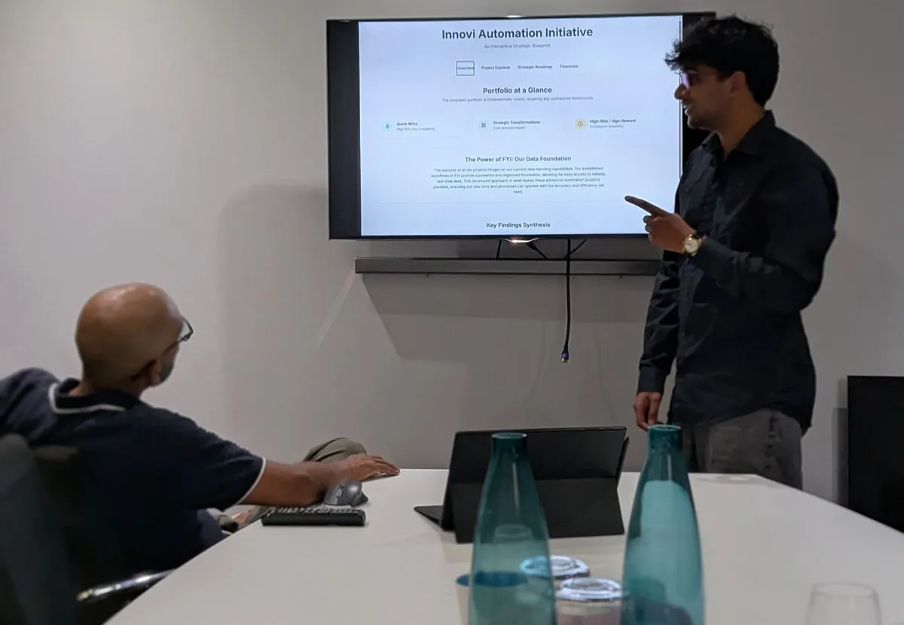

An AI agent team for an accountancy firm.
Fifteen stalled draft agents became one router in front of eighteen specialist lanes. Staff brief it like a junior and it routes itself. Now being rebuilt as the firm's own product on a custom harness, with the working rules enforced in code: the manager model can't do the juniors' legwork, memory saves need the user's word-for-word approval, and anything leaving the system needs human sign-off.
What it actually does
The VAT return auditor runs a tab-by-tab audit of Xero VAT exports against HMRC rules. The accounts-preparation agent runs a three-way reconciliation, from bank to ledger to trial balance, and raises a suspense report for anything unresolved. The client-onboarding agent builds a client's KYC and permanent file through a guided interview, auto-filling from firm records and Companies House. Job-card automation fills job-setup templates from prior-year data. Alfred, an onboarding and support agent that routes staff to the right tool, was the single biggest adoption win in staff testing.
Two design rules that came out of incidents
An overloaded combined agent hung under real data load. Root-caused to turn-size overload, split into two purpose-bound agents joined by a shared handover artefact. The rule that stuck: separate by function, bound each turn. And every agent drafts for staff review; nothing auto-sends or auto-files.